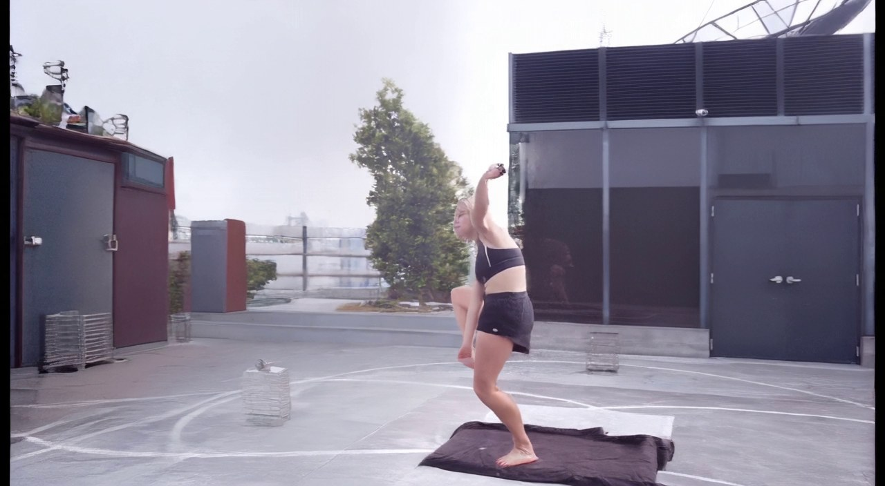

Stage3 +45° 统一案例审查
共同案例：case13 f845–f865，全段 21 帧。为拉大与原片的视角差异，Stage2 末帧改为右绕 +45°；下方只播放 Stage3 结果。15 个 DD 方案使用同一末帧、源动作和相机；MoVieS、AnyView 不接收 Stage2 图像，仅作独立参考。所有结果均为本轮新输入重新推理，效果由整段视频审查，未认定任何方案已通过。
| 方案与论文／源码 | 相对第一版具体改了什么 | Stage3 效果与 21 帧结果 |
|---|---|---|
| 共同输入与基模基模：Wan2.2 TI2V-5B ＋ DD 相机 LoRA（step-10000）；DepthDirector 官方源码 | 原视频与片段：case13 原片；f845–f865，全段 21 帧。 相机与共同首帧：按本轮要求将目标机位从 +20° 加大到右绕 +45°；DD 系列均输入新 Stage2 第 81 帧。此机位尚未被认定为 VLM 全局最优。 基模与条件：Wan2.2 TI2V-5B＋DepthDirector 相机 LoRA step-10000；同一源动作、目标视角控制和随机种子 42。 播放范围：仅 Stage3 原生生成的 21 帧；统一按 15 fps 播放。 |  右图是 15 个 DD 方案真实使用的同一张输入图像；独立模型不读取它。 查看原片对应帧与新末帧并排对照 |
| 关节热图与运动残差投影关节时间残差 beta 0.5case13 · f845 目标视角轨迹来源：本地改法；基于 DepthDirector | 本地改法：在 DD 的源动作条件里，把投影关节附近的逐帧位移残差加权 0.5，希望手臂跟上目标机位；没有移植一篇完整论文，也没有重训。 | 五帧抽查：肢体重影比基线少，腿能向前伸；脸手仍软，背景留有竖白条。 |
| 关节热图与运动残差投影关节时间残差 beta 1.0case13 · f845 目标视角轨迹来源：本地改法；基于 DepthDirector | 同一关节残差改法，把权重由 0.5 增至 1.0，测试更强的动作提示；其余输入不变，没有重训。 | 五帧抽查：动作与 0.5 权重相近，未见更强权重带来明显收益；脸手仍软。 |
| 原生参数（角度、时长、CFG、控制强度）原生 DD CFG 1.5来源：DepthDirector（基模论文） | 只把 DD 原生 CFG 从第一版的 1.0 改为 1.5；共同首帧、源片、+45° 机位、21 帧长度和随机种子不变，没有重训。 | 五帧抽查：高踢姿态较基线连贯、幅度更大；身体仍变形，脸手软。 共同输入为表格首行新 +45° Stage2 末帧；本页仅播放 Stage3 的 21 帧。 |
| 人体区域加权短训练六步短训练适配器 · +45°来源：本地训练损失改法；基于 DepthDirector | 本地训练实验：让 DD 的短训练损失更重视人物、关节和运动区域；已有其他案例试验，但尚未在本表统一的 f845 输入生成本版，不能报效果。 | 五帧抽查：人物较稳定，但后段抬腿幅度不足，背景竖白条仍在；短训练未证明成功。 共同输入为表格首行新 +45° Stage2 末帧；本页仅播放 Stage3 的 21 帧。 |
| Wan-Move 轨迹特征模块Wan-Move 官方轨迹函数 α0.35来源：Wan-Move: Motion-controllable Video Generation via Latent Trajectory Guidance | 调用 Wan-Move 源码中的轨迹位置图与特征替换函数，用源片实测的密集轨迹传播人物首帧特征；只接入这两个模块，没有移植完整 Wan-Move 模型，也没有重训。 | 五帧抽查：仍有重复手臂和身体拖影，后段动作未明显优于基线。 共同输入为表格首行新 +45° Stage2 末帧；本页仅播放 Stage3 的 21 帧。 |
| Motion-I2V ForwardWarpMotion-I2V ForwardWarp α0.35来源：Motion-I2V: Consistent and Controllable Image-to-Video Generation with Explicit Motion Modeling | 调用 Motion-I2V 源码中的 ForwardWarp，用源片实测的密集轨迹前向搬运人物首帧特征；没有接入论文的运动预测网络和完整时序架构，没有重训。 | 五帧抽查：动作走势与基线接近，手臂重影及高踢姿态问题仍在。 共同输入为表格首行新 +45° Stage2 末帧；本页仅播放 Stage3 的 21 帧。 |
| FlashMotion 预训练适配器FlashMotion SlowAdapter α0.3来源：FlashMotion: Few-Step Controllable Video Generation with Trajectory Guidance | 把 FlashMotion 官方预训练 SlowAdapter 接到 DD，并用目标机位的仿射人体剪影提示动作；这是适配器接入实验，不是完整 FlashMotion 推理链，没有重训。 | 五帧抽查：人物轮廓比基线稳，但后段抬腿幅度不足，背景竖白条未消失。 共同输入为表格首行新 +45° Stage2 末帧；本页仅播放 Stage3 的 21 帧。 |
| TTM 双时钟去噪TTM 双时钟 · 强约束 7 步来源：Time-to-Move: Training-Free Motion-Controlled Video Generation via Dual-Clock Denoising | 按 TTM 官方代码接入时间掩码和双时钟去噪，让强运动时更关注目标机位控制；适配到 DD 基模，未运行原论文完整模型，没有重训。 | 五帧抽查：肢体重影减少，但腿始终偏低，未恢复源片的高踢。 共同输入为表格首行新 +45° Stage2 末帧；本页仅播放 Stage3 的 21 帧。 |
| Depth ControlNetDepth ControlNet · DD 目标深度 0.5 · case13 f845来源：Wan2.2 Controlnet（官方源码） | 把 Wan2.2 Controlnet 官方 Depth 权重接到 DD，以目标视角深度图约束人物与场景布局；没有重训。 | 五帧抽查：人物模糊拖影明显，背景出现竖亮块，未见明确改善。 共同输入为表格首行新 +45° Stage2 末帧；本页仅播放 Stage3 的 21 帧。 |
| Tile ControlNetTile ControlNet · warp 0.2 · case13 f845来源：Wan2.2 Controlnet（官方源码） | 把 Wan2.2 Controlnet 官方 Tile 权重接到 DD，用目标视角纹理图约束局部外观；没有重训。 | 五帧抽查：人物轮廓稍稳，但抬腿幅度小，背景竖亮块明显。 共同输入为表格首行新 +45° Stage2 末帧；本页仅播放 Stage3 的 21 帧。 |
| HED ControlNetHED ControlNet · warp 0.5 · case13 f845来源：Wan2.2 Controlnet（官方源码） | 把 Wan2.2 Controlnet 官方 HED 边缘预处理与权重接到 DD，用柔和边缘约束目标视角轮廓；没有重训。 | 五帧抽查：轮廓较稳，但动作趋于停住，后段缺少高踢且有背景亮块。 共同输入为表格首行新 +45° Stage2 末帧；本页仅播放 Stage3 的 21 帧。 |
| Canny ControlNetCanny ControlNet · warp 0.5 · case13 f845来源：Wan2.2 Controlnet（官方源码） | 把 Wan2.2 Controlnet 官方 Canny 权重接到 DD，用目标视角硬边缘约束结构；没有重训。 | 五帧抽查：轮廓较稳，但腿部动作偏小，背景亮块仍明显。 共同输入为表格首行新 +45° Stage2 末帧；本页仅播放 Stage3 的 21 帧。 |
| LaMa 修补＋TileLaMa 背景修补＋Tile 0.2来源：Resolution-robust Large Mask Inpainting with Fourier Convolutions（LaMa）；Wan2.2 Controlnet（Tile 源码） | 先用 LaMa 官方模型补目标视角控制图中的背景空洞，再接 Wan2.2 Controlnet 的 Tile 权重约束外观；没有重训。 | 五帧抽查：腿有前伸，人物与背景仍留竖亮块，姿态不够自然。 共同输入为表格首行新 +45° Stage2 末帧；本页仅播放 Stage3 的 21 帧。 |
| Depth＋Tile 双模块Depth＋Tile 双模块 0.5／0.2来源：Wan2.2 Controlnet（Depth／Tile 源码） | 同时接 Wan2.2 Controlnet 官方 Depth 和 Tile 权重，让几何布局与局部外观一起约束 DD；没有重训。 | 五帧抽查：轮廓较稳，但后段高踢不足，背景竖亮块仍在。 共同输入为表格首行新 +45° Stage2 末帧；本页仅播放 Stage3 的 21 帧。 |
| NLF 三维人体＋FlashMotionNLF 三维人体＋FlashMotion α0.3来源：Neural Localizer Fields for Continuous 3D Human Pose and Shape Estimation；FlashMotion（SlowAdapter 源码） | 先用 NLF 官方模型估计三维人体并投影成 +45° 剪影，再把剪影送入 FlashMotion 官方 SlowAdapter 约束 DD；两个模块组合，未重训。 | 五帧抽查：后段人物倾倒、肢体糊成一团，NLF＋FlashMotion 组合未改善这个案例。 共同输入为表格首行新 +45° Stage2 末帧；本页仅播放 Stage3 的 21 帧。 |
| MoVieS 动态 3DGS 新视角MoVieS 官方 3DGS · 21 帧来源：MoVieS: Motion-Aware 4D Dynamic View Synthesis in One Second | 运行 MoVieS 官方动态 3DGS 推理：从同一源片抽 13 帧重建，再渲染 +45° 的 21 帧；它不读取 Stage2 末帧，因此只作参考。 | 五帧抽查：黑洞与重影大面积明显，且不接收 Stage2 末帧；仅作独立参考。 独立模型不读取 Stage2 末帧，不能作同输入优劣排名。 |
| AnyView 动态新视角AnyView 官方 2B · 21 帧来源：AnyView: Synthesizing Any Novel View in Dynamic Scenes | 运行 AnyView 官方 2B 模型：输入同一源片与 +45° 相机，独立生成 21 帧新视角；它不读取 Stage2 末帧，因此只作参考。 | 五帧抽查：动作较连续，但画面布局与新 Stage2 末帧不一致；仅作独立参考。 独立模型不读取 Stage2 末帧，不能作同输入优劣排名。 |